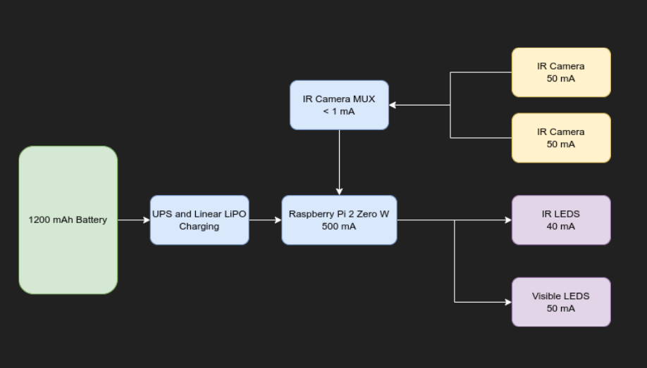

Team J-GASM
We are a team of 5 Mechatronics Engineering Students who want to make reading cool again
Comprised of Gods amongst Men, we're truly passionate about our product and can't wait to hear what you think of it
Jacob Piirsalu
Lead Dev Ops Software
Gursimmer Banwait
Mechanical Project LeadAndrew Barlow
Lead Optics EngineerSohun Patel
Head Electronics Engineer
Mu en Zhang
Head of Machine LearningBackground on NeedleDrop
NeedleDrop is a smart device used to make reading more fun and engaging! It does this through playing music based on the events happening on the story you're reading!
Computing a Story
Kurt Vonnegut famously talked about how there are only 8 stories in the world and why there's no reason a computer cannot read and graph the simple plot of stories
Watch his most famous lectures on it below
Reading books has gotten less and less popular as the years have gone by.
After all, why would you read books for entertainment when you could watch YouTube, TikTok, etc? Well did you know that reading has many benefits?
- Reading helps prevent age-related cognitive decline
- People who read generally are mmore empathetic
- Helps alleviate depression symptoms and can help you live longer
But we get it, reading can be boring which is where we come in.
Technology Behind NeedleDrop
Mechanical Device
The NeedleDrop device is designed to be a clip-on book lamp that can be easily attached to a book or other reading material. Inside the book lamp, there are two IR cameras and IR LEDs that are used to take a picture of the book page. The IR cameras are mounted on a goose-neck, allowing them to be positioned at the proper angle to capture the image of the book page.
Electronics
The electrical design of the NeedleDrop device includes a Raspberry Pi Zero microcontroller, 2 IR cameras, visible-band and IR LEDs for illuminating the page being read. In the exploed view you can see the internal PCBs the device operates on. The largest amount of space is taken up by the battery that provides well over 1 hour of use per charge.
The switch on the base of the device is used to turn on and off the device when not in use. Recharging the device is simple and accomplished through USB micro-A cable and the LED light at the front indicates charging. Above you can see the basic power distribution diagram
The prototyping has been accomplished with a full size Raspberry Pi 3B+ to test power consumption

Optics
As mentioned above, The NeedleDrop device utilizes two IR cameras mounted on a goose-neck to acquire information. The IR cameras are used to take a picture of the book page, which is then transmitted via bluetooth to the iOS app for further processing.
There are several advantages to using IR cameras for this application. First, IR cameras are able to capture detailed images in low light environments, making them ideal for use in a book lamp where lighting conditions may vary. Additionally, IR cameras are able to capture images regardless of light levels, which allows the device to function in a variety of ambient conditions.
This picture on the left was taken in complete darkness! and relies only on IR light proving that even with the worst lighting conditions Needledrop is able to read what you're reading!
An even eerier way to enjoy horror books!
Below is the text extracted from the dark image wtih amazing results!
Software Architecture
In summary, the NeedleDrop iOS app uses Bluetooth to connect to the NeedleDrop device and receive an IR image of the book page that the user wants to read. This image is then passed to the OCR module, which uses the Vision library to extract the text from the image. This text is then sent to the sentiment analysis module, which uses an ML model created using Apple's CoreML library to determine the sentiment of the text.
The NeedleDrop iOS app is written in the Swift programming language and makes use of several external libraries, including Vision for AI and TabularData for dataframes. The app's main class is called ViewController, which handles the user interface and communication with the NeedleDrop device.
The app begins by setting up the Spotify authorization and configuration, including the appRemote object and the configuration object. The appRemote object is used to connect to the NeedleDrop device and manage the playback of music, while the configuration object stores the necessary information for authenticating with Spotify.
We developed an App to prototype how pipeline works and is shown below
This app works by taking in a picture of where there is the title of any song written in the picture.
The app extracts the text out of the image and searches for the song through the Spotify API
The app also provides playback controls, allowing the user to pause, resume, or skip to the next track.
The text below was used as input for the NeedleDrop prototype app
Emotion Analysis Through Machine Learning
Arguably the most mesmerizing part of the device is our ability to perform emotion analysis.
Machine learning based emotion analysis is a type of natural language processing that uses algorithms to detect and classify emotions from text. It can be used to analyze large amounts of text and extract meaningful information about emotions present in the text.
The NRC is actually one of the world's best research teams when it comes to emotion analysis winning multiple competitions with this data set and used in many different applications. There was a very brief study conduted in regards to charting emotions over pages in story books.
The graphs show emotions charted between Hamlet and Frankenstein. If you have read Frankenstein it is quite easy to see how the trust emotion slowly decreases over time and fear increases.
The NRC lexicon is a emotion and sentiment lexicon created by the National Research Council Canada. It is a list of English words and their associated sentiment scores. The sentiment scores range from -1 to +1 for each emotion. The key emotions in the dataset include 8 different key emotions.
The sentiment scores are based on the number of times the word was used in the context of positive or negative sentiment in a corpus of books and movie reviews.
Using the NRC lexicon, machine learning models can be trained to classify text into positive and negative sentiment classes. The model uses the sentiment scores to determine the sentiment of an input text. This makes it a powerful tool for sentiment analysis and emotion detection.
Marketing Information
Frequently Asked Questions
When it comes to new tech there's a lot of questions people have and we're happy to answer!
Back then sound was played through gramaphones and record players would thus need the needle to drop!
link to one such playlist here, read the comments!